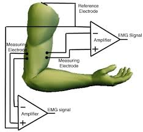
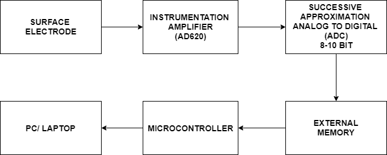
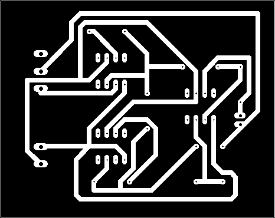
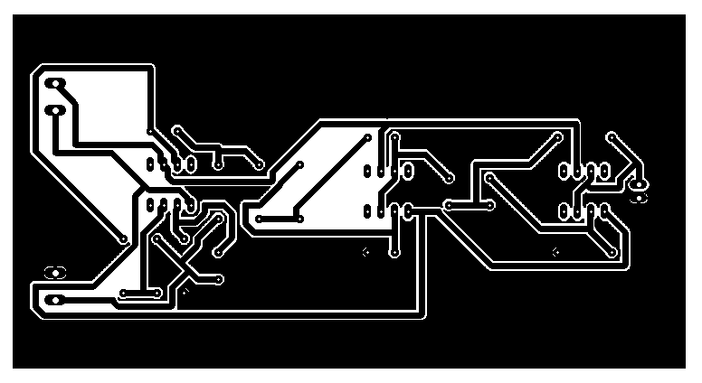
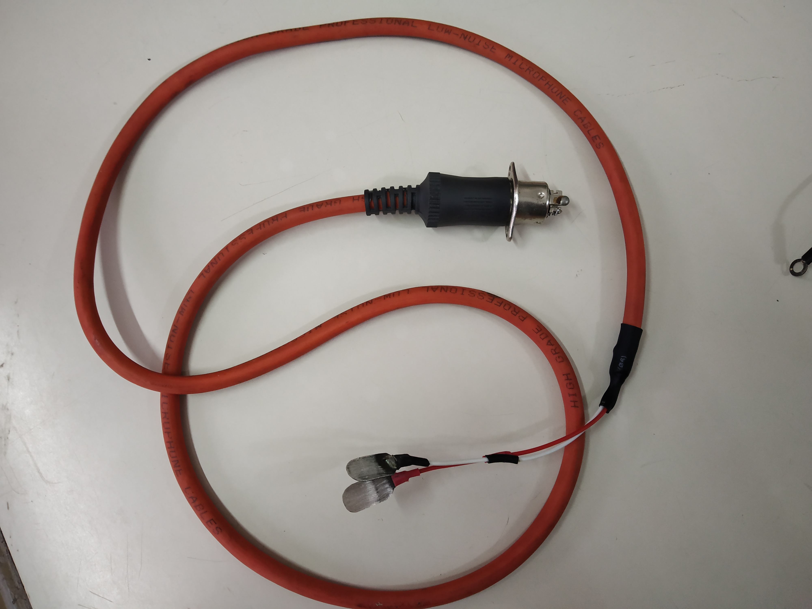

Electromyography (EMG) signals are always used for clinical diagnostic applications regarding nerve and muscle disorders that are affecting the link between nerves and muscles. These symptoms may include tingling, numbness, or unexplained weakness in the limbs. EMG (electromyography) records the electrical activity of our muscles.
In this report we describe the hardware developed by us for sensing EMG signals, amplify them, digitize them under the supervision of the microcontroller and send the data to the computer for display and further processing.
Electromyography (EMG) may be a diagnostic technique that evaluates the health condition of muscles and therefore the nerve cells that control them. These nerve cells are known as motor neurons. They transmit electrical signals that cause the muscles to contract and then relax. An EMG translates these signals into graphs or numbers, helping doctors to form a diagnosis.
The doctor will usually order EMG when someone is showing symptoms of a muscle or nerve disorder. These symptoms may include tingling, numbness, or unexplained weakness in limbs. EMG results can help the doctor cure muscle disorders, nerve disorders, and disorders affecting the connection between nerves and muscles.
- Objectives
- The primary objective of this project is to develop the electronic hardware and software to acquire EMG signals and route them to PC for further processing.
- Understanding and study of different electrodes for picking up the EMG signals
- Implementation
- The First stage is to study the differential amplifier /Instrumentation amplifier according to the need for surface electrodes.
- After designing the instrumentation amplifier the user is given the option to vary the gain according to the need required which is done by another stage of the operational amplifier.
- Performing the simulation of the hardware circuit using proteus design suite 8.6
- Once the instrumentation amplifier is built with variable gain, this amplified needs to be stored in the computer which is done using the data acquisition system.
- 
- 
EMG signal interpretation is a rising and contemporary research field today. A lot of research work and analysis has been carried out by different scientists in this domain over the last 70-80 years. Some of the biomedical engineering labs in our country also have shown their interests in this research domains and started work. Still, ergonomics has not been carried out on these research field. Documentation of experiments was beginning with discovering the generation of electricity from the specialized muscle of electric eel by Franesco Redi’s initiative research proposal in 1666. Different scientists, research workers proposed and demonstrated various innovative and artistic articles and objects with an influence of Redi’s work. In 1890, Marey introduced the term ‘electromyography’ and its activity behind actual reading. In the short review consideration, it proceeds to conclude that though the particular idea originated from Redi’s work but the term EMG was introduced by Marey.
Based on the literature review it says that the EMG signals are acquired from muscles and they vary from person to person. For a healthy person, the EMG signals have more amplitude compared to that of an unhealthy person. This EMG signal based on the study is reviewed that they are complicated to study for a normal person as it is a random signal.
The signal obtained at the end of the EMG detector is a processed signal and this is not the actual EMG signal generated by the body. Due to this, the raw EMG signal generated by our muscles is lost and this might cause difficulties in the final observation done by the doctor who analyzes the signal in depth.
Surface electrodes are electrodes that are applied to the skin of the person. Surface electrodes are those which are placed in contact with the skin of the subject to obtain bioelectric potentials from the surface. Surface electrodes are pointed on the skin but they do not prick the surface. Surface electrodes can be either dry or floating. Of the two electrodes, the dry electrodes come in direct contact with the skin, but the floating electrodes use an electrolytic gel as a chemical interface between the skin and the metallic part of the electrode.
- 
- 
The System software is computer software designed to work and control the pc hardware and to supply a platform for running application software
The Proteus Design Suite is a software tool suite used essentially for electronic design automation. The software is employed mainly by electronic design engineers and technicians to make schematics and electronic prints for manufacturing computer circuit boards.
int numSamples=0;
long t, t0;
void setup()
{
Serial.begin(115200);
ADCSRA = 0; // clear ADCSRA register
ADCSRB = 0; // clear ADCSRB register
ADMUX |= (0 & 0x07); // set A0 analog input pin
ADMUX |= (1 << REFS0); // set reference voltage
ADMUX |= (1 << ADLAR); // left align ADC value to 8 bits from ADCH register
// sampling rate is [ADC clock] / [prescaler] / [conversion clock cycles]
// for Arduino Uno ADC clock is 16 MHz and a conversion takes 13 clock cycles
//ADCSRA |= (1 << ADPS2) | (1 << ADPS0); // 32 prescaler for 38.5 KHz
ADCSRA |= (1 << ADPS2); // 16 prescaler for 76.9 KHz
//ADCSRA |= (1 << ADPS1) | (1 << ADPS0); // 8 prescaler for 153.8 KHz
ADCSRA |= (1 << ADATE); // enable auto trigger
ADCSRA |= (1 << ADIE); // enable interrupts when measurement complete
ADCSRA |= (1 << ADEN); // enable ADC
ADCSRA |= (1 << ADSC); // start ADC measurements
}
ISR(ADC_vect)
{
byte x = ADCH; // read 8 bit value from ADC
Serial.println(x);
Serial.print("");
numSamples++;
}
void loop()
{
if (numSamples>=1000)
{
t = micros()-t0; // calculate elapsed time
//Serial.print("Sampling frequency: ");
//Serial.print((float)1000000/t);
//Serial.println(" KHz");
//delay(2000);
// restart
t0 = micros();
numSamples=0;
}
}
This project introduced us to the important topics of Tiva™ TM4C129ENCPDT Microcontroller and its architecture. Tiva™ C Series ARM Cortex-M4 microcontroller has been used herein the EMG detector that is TM4C129ENCPDT. The microcontroller has an inbuilt ADC and a memory that is used to convert the analog EMG signal into digital form and store it. Also, the analog signal was given to the Microcontroller and the graph was plotted.
The software implementation of the analog circuit was built and studied using the Proteus design suite 8.6, further on the interfacing of the Microcontroller with the analog circuit was done to complete the hardware of the circuit. Energia IDE was used to interface the microcontroller with the analog circuit

- 
Our project is a cheap and portable device that can be used in the future by doctors as they can be easily carried. Since the project is not yet completed, it can be further completed in the coming time and more advancement can be brought to the device by introducing a database system. The database system can collect the data of patients which will help the doctors to contact and treat them. Also if there are any glitches or bugs in the device they can be removed in the future after more testing